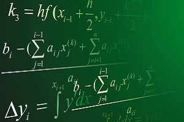

×

Алгебра и геометрия

Я люблю математику, потому что в ней все подчиняется определенным правилам, которые легко понять, и которые одинаковы абсолютно для всех. Математика имеет свои, неизменные законы, которые действуют во все времена и во всех странах. Математики могут обмениваться решениями, уравнениями и интересными примерами, даже если они не говорят на одном языке. Во всем мире принято одни и те же формулы, одни и те же знаки, и это делает людей ближе.
История
История в переводе с греческого языка означает «исследование, рассказ о прошлом». События прошлых лет могут служить хорошим материалом для создания произведений художниками, музыкантами, писателями. История даёт возможность поближе познакомиться с историческими личностями - великими людьми прошлого. Знание истории необходимо для того, чтобы лучше знать свою страну, свой народ и другие народы.
Физика
Мне очень нравится физика, потому что, все ,что нас окружает , основывается на законах физики. Катаемся ли мы на велосипеде, играем в футбол